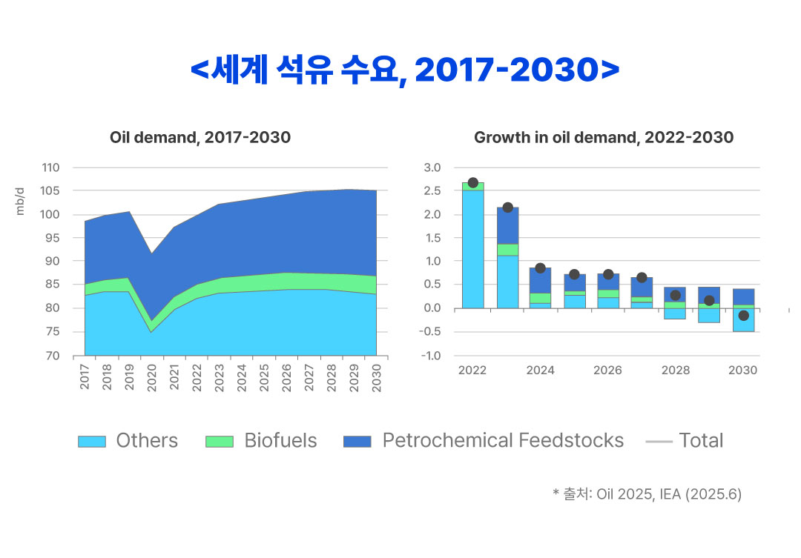
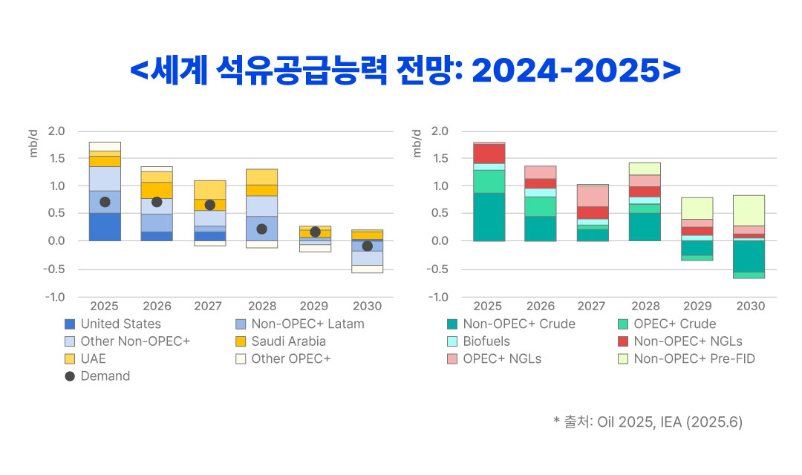
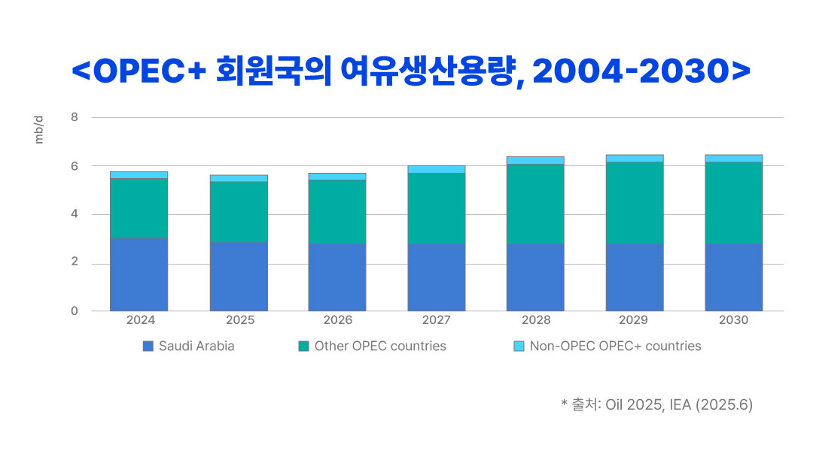
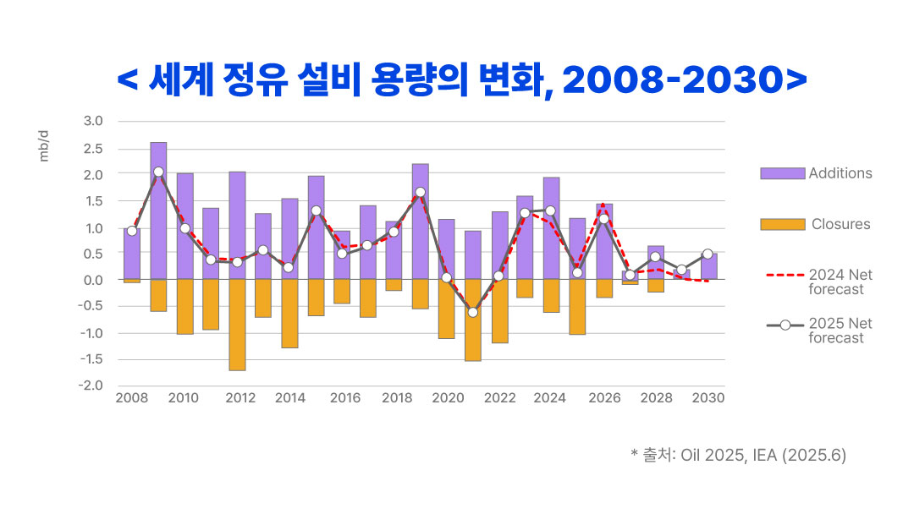
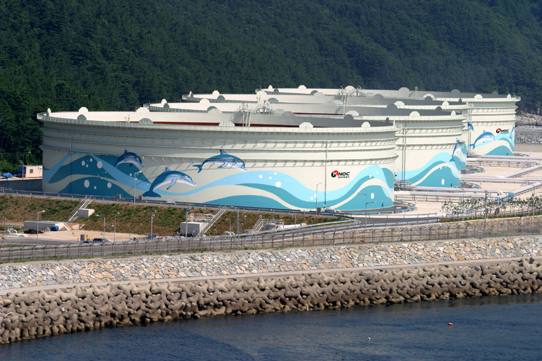
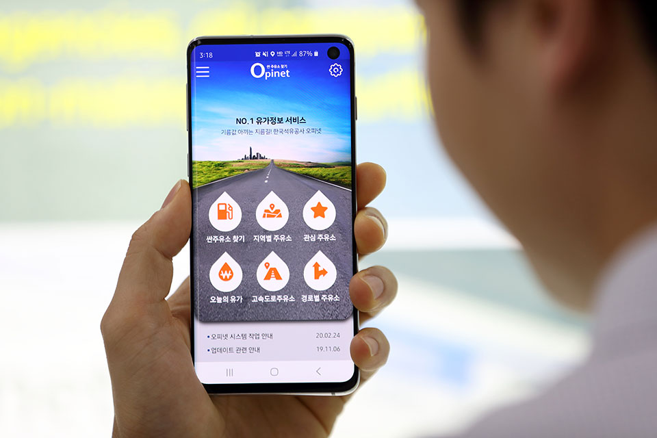

저탄소 경제체제로의 전환은 피할 수 없는 시대적 흐름이다.
재생에너지, 전기차, 수소경제, 소형모듈원자로(SMR),
탄소포집·활용(CCUS) 기술 등 다양한 청정에너지 관련 분야는 글로벌
투자 흐름과 각국의 에너지 정책에서 중요한 담론으로 부각되고 있다.
이처럼 청정에너지에 대한 기대가 커지는 가운데, 석유는 점차 과거의
자원으로 인식되기도 한다. 그러나 현실은 그리 단순하지 않다.
석유는 여전히 산업, 수송, 에너지 안보 측면에서 필수적인
에너지원이며, 이를 비용 효율적으로 대체할 수 있는 수단은 현재로서는
존재하지 않는다. 더불어 석유화학 원료로서의 수요는 향후에도
지속적으로 증가할 것으로 예상되며, 저탄소 경제로의 전환이 완전히
이루어지기 전까지
석유는 청정에너지의 ‘대체재’가 아닌 ‘보완재’라는 사실을 간과해서는 안 된다.
그렇다면 2030년을 향해 나아가는 석유 시장은 어떤 변화를 겪고
있을까? 본 칼럼에서는 국제에너지기구(IEA)가 2025년 6월에 발간한
『Oil 2025: Analysis and Forecast to 2030』의 주요 내용을
소개하고,
이러한 변화 속에서 우리나라 유일의 석유 공기업인 한국석유공사의
미래 역할에 대해 함께 고민해보고자 한다.
세계 석유 시장은 어디로 가고 있나 – 『IEA Oil 2025』 분석
IEA의 2030년 석유 시장 전망을 세 가지 키워드로 요약하면, ‘수요 안정화(plateau)’, ‘유연한 공급’, ‘지역 간 차별화’이다. 먼저 수요 측면을 살펴보자. 석유 수요는 과거처럼 가파르게 증가하지는 않겠지만, 동시에 뚜렷한 감소세를 보일 가능성도 낮다. 국제에너지기구(IEA)는 2030년 세계 석유 수요가 일일 1억 550만 배럴 수준에 이를 것으로 전망하고 있다. 이번 보고서에 따르면, 전기차 보급 확대와 연료 효율성 강화로 도로 운송 부문의 석유 수요는 정체될 것으로 보이나, 석유화학 산업의 원료 수요는 지속적으로 증가할 것으로 예상된다. 특히 2030년 전체 석유 수요의 약 1/4이 석유화학 원료용으로 사용될 것으로 전망된다.

다음으로 공급 측면에서는 미국, 브라질, 가이아나 등 비(非) OPEC 국가들의 증산과 중동 산유국들의 생산능력 확대로 인해, 2030년 세계 석유 생산능력은 일일 1억 1470만 배럴 수준에 이를 것으로 전망된다. 이는 공급 능력 증가 폭이 수요 증가분을 상회할 것임을 의미한다. 이에 따라 OPEC+ 회원국의 유휴 생산 여력은 2030년에는 일일 600만 배럴을 넘어설 것으로 보이며 세계 석유 공급에는 일정 수준의 여유가 생길 것으로 예상된다. 그러나 수요를 초과하는 공급 능력이 시장의 안정으로 직결된다고 보기엔 이르다. 최근 이란-이스라엘 전쟁, 예멘 반군의 홍해 공격 사례에서 보듯이, 중동 지역의 지정학적 리스크는 여전히 향후 석유 시장의 주요 변수로 작용할 가능성이 크며, 이를 간과해서는 안 된다.


정제 부문에서는 지역 간 양상이 뚜렷하게 차별화되고 있다. 중국, 인도, 중동 지역은 정유·석유화학 일체형 설비를 대규모로 확충하고 있는 반면, 북미와 유럽은 기후 규제 강화와 수익성 저하로 인해 설비를 축소하고 있다. 이는 세계 정유 산업이 확장기에서 수축기로 전환되고 있음을 시사한다. 석유제품 수요가 예상보다 견조할 경우(예: 러시아-우크라이나 전쟁 당시 사례), 특정 지역의 정제 능력 부족이 글로벌 제품 가격 급등으로 이어질 수 있다. 역내 공급 안정성이 국가 경쟁력과 직결되는 상황에서, 우리나라의 정제 역량과 지정학적 위치는 중요한 전략적 자산으로 부각될 수 있다. 또한 지역 간 정제 부문의 양극화는 석유제품 무역의 흐름을 장거리화·복잡화시키고 있으며, 이에 따라 트레이딩 및 물류 효율성은 국가 차원의 핵심 전략 요소로 부상할 것으로 전망된다.

이번 IEA 보고서는 세계 석유 시장이 과거의 ‘양적 팽창기’에서 ‘질적 전환기’로 접어들고 있음을 보여주고 있다. 이는 석유가 적어도 2030년까지는 — 나아가 그 이후에도 한동안 — 국가 산업의 핵심 기반이자 전략적으로 관리해야 할 자원으로 남을 것임을 시사한다. 결국 석유는 사라지는 자원이 아니라, 그 역할이 변화하고 있을 뿐이다. 이러한 변화의 흐름을 정확히 읽어내는 것이야말로 향후 석유 정책 수립의 출발점이 되어야 한다.
기존을 다듬고, 미래를 설계하다: 석유공사의 전략적 역할
세계 석유 시장 구조가 급변하는 지금, 한국석유공사 또한 기존의 역할에 머무르지 않고, 변화한 시장 환경에 부합하는 전략적 기능 재편과 역할 조정을 모색해야 한다. 이러한 전환은 두 가지 방향에서 이루어져야 한다. 하나는 기존 영역의 고도화이며, 다른 하나는 새로운 영역으로의 역할 확장이다. 본 칼럼에서는 각 영역에서 생각해볼 만한 사례를 하나씩 살펴보고자 한다.
(1) 기존 영역: 석유비축 및 운용 전략의 고도화
지금까지의 석유 비축 정책은 수급 위기 시 안정적인 물량 공급이라는
정태적 기능에 초점을 맞추어 운영되어왔다. 그러나 오늘날 석유
시장은 훨씬 더 복잡하고 변동성이 크며, 보다 정교한 전략적 판단을
요구하는 구조로 진화하고 있다.
이에 따라 향후의 비축 전략은 단순히 ‘비축하는 것’에서 나아가,
시장을 조율하고 위험을 관리하는 수단으로 기능해야 한다.
대표적 사례로는 미국 에너지부(DOE)의 전략비축유(SPR) 운용을 들 수
있다. 2022년 러시아-우크라이나 전쟁으로 유가가 배럴당 100달러를
넘자 DOE는 과감하게 SPR을 방출해 자국 석유제품 가격 안정에
기여했다. 국제유가가 배럴당 70달러 이하로 하락한 지금 DOE는
전략비축유의 재매입에 적극적으로 나서고 있다. 또 다른 흥미로운
사례는 사우디아라비아다. 사우디는 러시아산 원유를 값싸게 수입해
내수용으로 활용하는 동시에, 자국산 원유는 더 높은 가격에 수출했다.
이러한 전략은 비축유를 단순한 가격·수급 안정에 그치지 않고 국가의
전략 자산으로 활용해 재정적 이익까지 도출한 사례라 할 수 있다.
우리 역시 이같이 유연하고 선진적인 비축 전략 구축이
필요하다.
현재의 수동적인 비축유 운용 및 방출·매입 체계를 보다 적극적이고
전략적인 방식으로 전환해야 하며, 이는 향후 더욱 확대될 국제 석유
시장의 불확실성과 변동성에 대응하는 데 중요한 수단이 될 수 있다.
특히 북한은 정유설비의 복합도 측면에서는 아시아 상위권에 속하지만,
정제 유연성과 고부가가치 제품 생산 역량 면에서는 구조적 제약이
존재한다. 이러한 상황에서 글로벌 석유제품 시장의 지역 간 불균형은
국내 산업의 가격·공급 리스크로 직결될 수 있으며, 이에 따라
석유공사의 공적 역할 수행 여지가 존재한다.

한국석유공사 석유비축시설물론 앞서 살펴본 미국의 경우, 산유국이자 에너지부 예산을 통해 전략비축유 방출 및 재매입을 신속하게 집행할 수 있는 체계를 갖추고 있다. 반면, 우리는 원유 순수입국이며 관련 예산과 권한의 활용에도 제약이 많아 이러한 전략적 운용을 현실화하려면 제도 개선과 사회적 설득 과정이 필요할 것이다. 그럼에도 불구하고 전략비축유는 평시에는 상당한 기회비용을 수반하는 자산이기 때문에, 합리적이고 과학적인 확률론적 사고에 기반한 비축 전략의 고도화는 미래 석유 시장 대응을 위한 필수 과제라 할 수 있다.
(2) 신규 영역: 친환경 석유대체연료시장 생태계 조성자로서의
역할
HVO(Hydrotreated Vegetable Oil, 수첨식물성오일)로 불리는 친환경
바이오연료는 글로벌 연료 시장에서 탄소 배출 저감의 핵심 대안으로
부상하고 있다.
특히 항공, 해운, 국방 등 탄소 저감 수단이 제한적인 분야에서는
HVO가 현재로서는 거의 유일한 현실적 대안으로 평가된다. 이 중에서도
항공 분야에서는 EU, 미국, 일본 등 주요 국가들이
지속가능항공유(Sustainable Aviation Fuel, SAF) 혼합의무제와 세제
지원 제도를 도입하며 초기 시장 형성에 적극 나서고 있다는 점에
주목할 필요가 있다. 향후 최소 10년간 SAF 시장은 연평균 65.5%에
달하는 고성장세가 예상되며, 국제항공운송협회(IATA)는 2050년까지
항공 연료 수요의 65%가 SAF로 대체될 것으로 전망하고 있다.
그러나 현재 우리나라는 HVO 생산 기반은 물론, 수요 창출을 위한
제도적 여건도 미비한 상황이다. 초기 시장에 진입한 정유사 등 민간
기업은 높은 원료 비용, 낮은 수요 예측 가능성, 인증 시스템의 부재
등 여러 제약 요인에 직면해 있다.
이러한 구조적 리스크를 민간이 단독으로 감내하기는 어렵기
때문에, 정부·공공기관·정유사 간의 초기 협업 체계를 구축하고,
공공 부문이 ‘마중물 역할’을 수행해야 한다는 목소리가 높아지고
있다.
HVO 시장이 구조적으로 확대되는 흐름 속에서, 우리 석유공사가
공기업으로서의 적절한 역할을 고민해볼 시점이다.
무엇보다도, HVO와 같은 친환경 석유 대체 연료 분야에서 석유공사가
공적 역할을 수행하기 위해서는
이에 상응하는 법적 기반의 정비가 병행되어야 할 것이다. 석유공사는 기존의 전문성과 인프라를 바탕으로
민간 시장을 보완할 수 있는 영역을 모색하되, 기존 기관과의 역할
중첩을 방지하고, 실질적 정책 효과를 극대화할 수 있는 제도 설계가
함께 마련되어야 한다.
예컨대, 한국석유공사는 석유 정보 수집과 분석 역량에서 독보적인
위치를 점하고 있다.
오랜 기간 국내외 석유 관련 정보를 축적하고, 페트로넷과 오피넷을
운영해 온 경험을 바탕으로, 향후에는 친환경 석유대체연료의 원료
및 제품에 대한 가격·수급·정책 동향 등을 종합적으로 제공하는 정보
플랫폼 구축을 검토해볼 만하다.
이러한 플랫폼은 초기 시장 참여자들의 의사결정을 지원하는 공공재로
기능할 수 있으며, 석유공사가 기존 석유 중심의 역할에서
석유대체연료로까지 기능을 확장하는 데 있어 유의미한 첫걸음이 될 수
있다

한국석유공사 유가정보서비스 오피넷
더 나아가
석유공사의 저장 인프라를 활용한 석유대체연료 물류 지원도 고려해
볼 수 있다.
전국 주요 항만과 내륙 터미널에 이미 구축된 저장시설을 통해, HVO
기반의 차세대 바이오디젤 및 바이오항공유 물류망을 지원한다면,
별도의 대규모 투자 없이도 정유사, 항공사, 물류기업 등의 초기 수급
불확실성을 완화하는 데 기여할 수 있을 것이다. 이러한 물류 기능은
석유공사가 ‘에너지 안보 자산’으로서 수행해온 역할을 확장하는
계기가 될 수 있으며, 국내 친환경 석유대체연료 시장 활성화와
탄소중립 이행이라는 이중 과제를 동시에 뒷받침할 수 있다.
세계 석유 시장이 본격적인 질적 전환기를 앞둔 지금, 이제는
한국석유공사의 역할을 다시 진지하게 논의할 때다.
석유 없는 전환은 존재하지 않는다.
석유공사의 지속가능한 미래를 위해 지금 가장 필요한 것은 석유와
에너지 전환 사이를 잇는 그 연결고리를 설계하고 만들어 가는 일
아닐까? 더 늦기 전에 우리 모두가 함께 고민하고 진지한 준비에
나서야 할 때다.